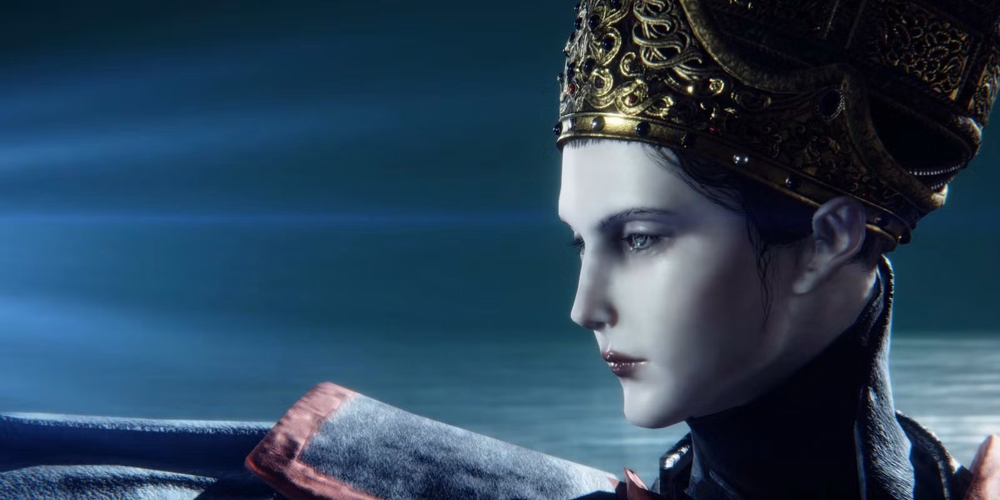
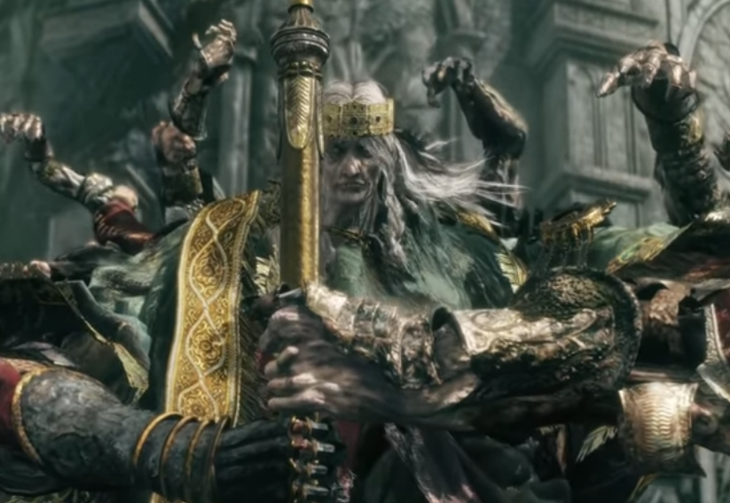

The world of Elden Ring has many characters. Here some of the more important ones.
For more Characters Click Here
The player Character, brought to the The Lands Betwen with the goal of claiming the shards of the Elden ring and Become Elden Lord.

A women who approcahes the Tarnished and makes a deal with them, she will be your maiden and turn your runes into strength (runes are collect from slaying enemeies and the main currency of the game). In return you will take here to the Royal Capital so she may fufill the her mission given to her by her mother
A horse. Given to you by Melina, he is you fastest form of transportation.
The god of this Land and mother of many of the demigods. When the Elden Ring shattered, she dissapeared.
A champion of the Lands between and Husband to Marika, together the would birth the first sets of demigods.
Another Champion of the lands, and would be a devout member of the Golden Order. Would become Marika's second Husband. Also dissapear not long after the Elden Ring breaks.
Head of the Carian Royal Family and Head of the Academy of Raya Lucaria. Her magic surpassed other mages and would recive power from the moon. Would become the first wife to Radagon.

One of Marika's and Godfrey's children. Cursed with omen blood, he was casted aside into the sewers of the Royal Capital. Currently is the ruling prince of Lyendell.
Son of Rennala and Radagon, he became one of the strongest demigods following his fathers footsteps and inspired by Godfrey. He now rest in the Calid wilds, suffering from the Scarlet ro from his battle with Malenia.
Decendant of the Godfrey and Marika's linage, he is the ruller of Stormveil Castle. He is considered the weakest of the demigods

Son of Marika and Godfrey, hero of Lyendell, and loved by many. He is consideed the golden child. Was the first demigod to die, and the events after his death would eventually lead to the shattering of the Elden Ring and the Shattering War.

Daugther of Rennala and Radagon, she would turn her back on the Golden Order try to bring an age of stars for her mother. She is an empyrean, someone who could one day take Marika's place as God. Her quest is tied to one of the game's endings.
Son of Radagon and Rennala, he would take hold of Volcano Manor and turn against the Golden Order. He would recruit tarnished so that he can turn them against the Erdtree so that one day he could take their strengh so that he could overthrow the Golden Order.

Son of Radagon and Marika as well as twin brother to Malenia, also an empyrean. He was curesd at birth with enernal youthfulness, were he cannot age after a certain point of his life and would leave the Golden Order to focus on finding a cure to his and his sister's curse.
Daugther of Radagon and Marika as well as twin sister to Miquella, also and empyrean. She was cursed at birth with scarlet rot, this illness is slowly retting her from the inside. Miquella would find a way to halt the spread from within her, in turn she would become his blade as she believed he should be the one to take Marika's place as God.
Son of Godfrey and Marika, and twin brother to Morgott. He would meet another god while he was casted to the sewers, and would create the Mohgwin Palace for his upcoming age of Blood.